开心果 Need Car · 2023-01-11T09:21:00+08:00 · 微信原文
1、如何使用HighTec生成库文件（.a）？
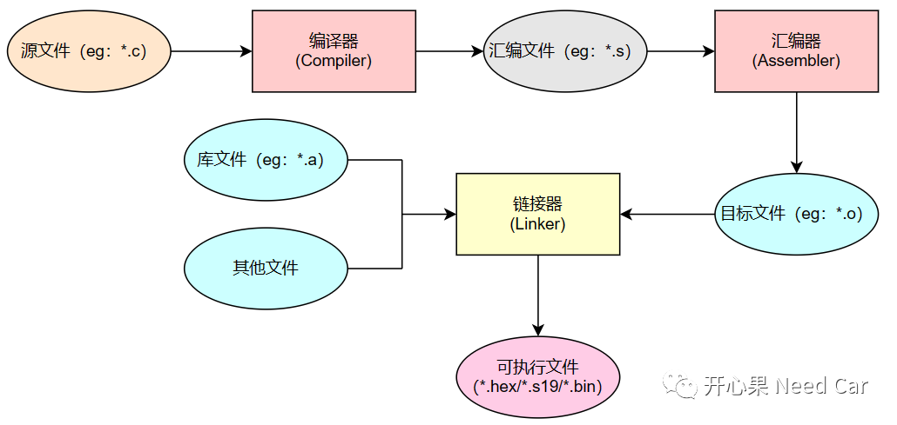
（一）HighTec如何生成.a文件
如果要生成静态库文件（.a），首先需要生成目标文件（Object，即：*.o文件）。具体操作，参考如下示例：将Create_a_File文件夹下的Create_a_File.c文件生成Create_a_File.o，并最终生成libCreate_a_File.a文件，方便第三方用户调用其中的Func_Add_TwoNum()接口。
文件结构如下所示：
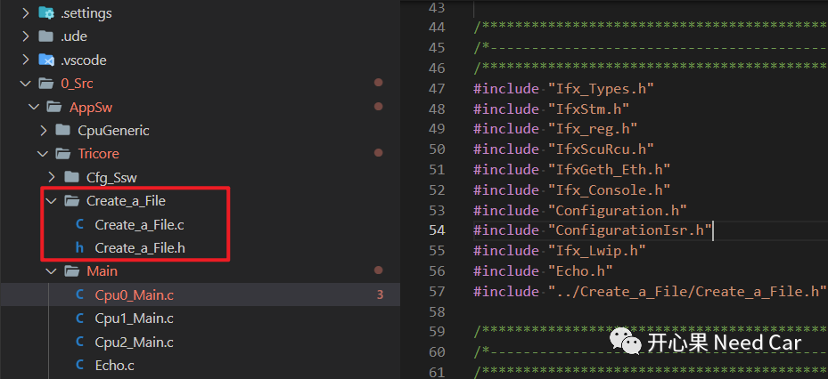
Create_a_File.c对应的文件内容如下所示：
#include "Create_a_File.h"uint16 Func_Add_TwoNum(uint8 _argu01, uint8 _argu02){return (uint16)(_argu01 + _argu02);}
Create_a_File.h对应的文件内容如下所示：
typedef unsigned char uint8;typedef unsigned short uint16;extern uint16 Func_Add_TwoNum(uint8 _argu01, uint8 _argu02);
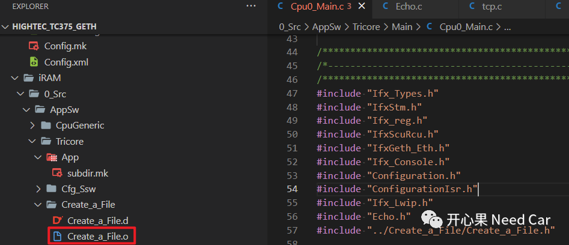
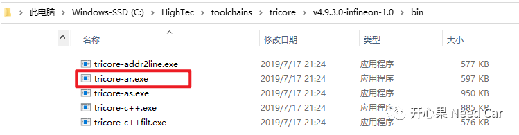
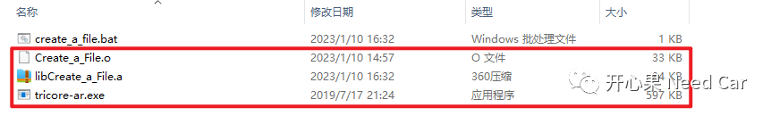
tricore-ar [--error-numbers] [-]<option>[<modifier>] <archive> [<member>...]具体命令操作如下：
tricore-ar.exe rv libCreate_a_File.a Create_a_File.o注意：生成的库文件中，文件名必须添加lib前缀和.a后缀，否则，库文件无法被搜索到，eg：libCreate_a_File.a。
@echo offclscdtricore-ar.exe rv libCreate_a_File.a Create_a_File.opausecls@echo on
（4）生成libCreate_a_File.a文件
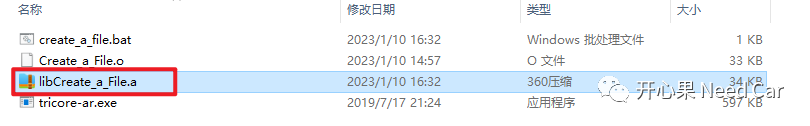
2、如何将.a文件集成到工程项目中？
（一）删除源文件（*.c）
生成静态库文件（*.a）主要给第三方使用，因此，生成*.a文件以后，即可将工程中的源文件删除，删除后的工程如下所示：
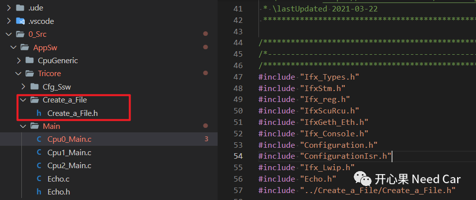
头文件（*.h）不能删除，第三方需要依赖头文件编译，且第三方通过头文件可知道源文件中实现了哪些功能函数（API），以及这些功能函数的作用，以便于使用。
（二）HighTec加载静态库文件（*.a）
（1）单机Project Setting按钮，如下所示：
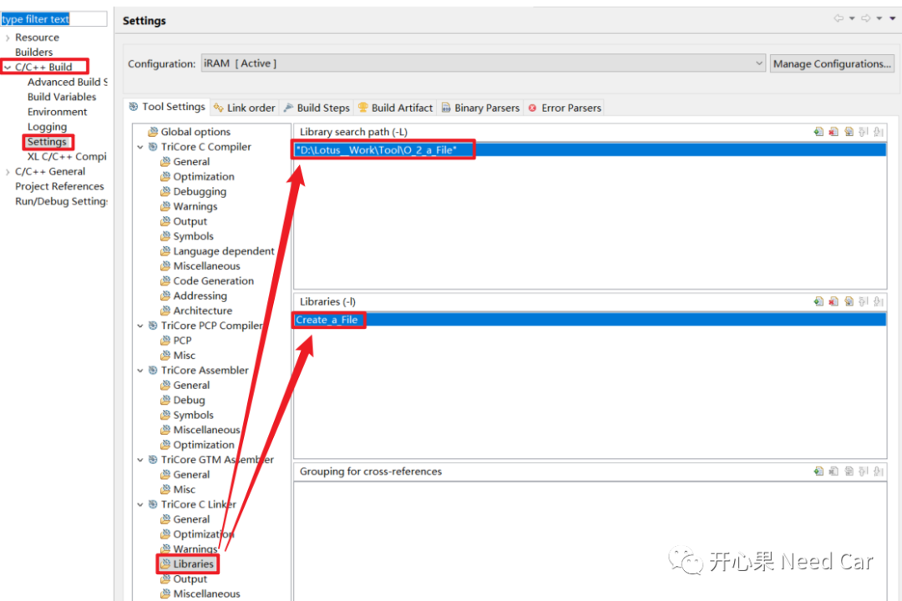
注意：添加库文件时，去掉lib前缀和.a后缀。
（3）重新编译
静态库文件链接编译后，如下所示：
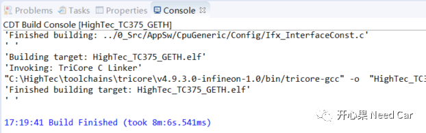
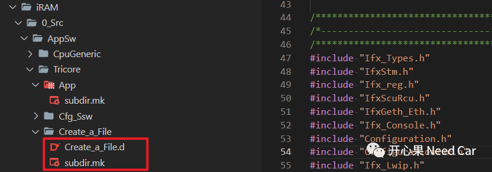
3、如何使用.a文件中的函数？
第三方集成了静态库文件的主要目的：使用静态库文件中的API，本文静态库文件中的接口为Func_Add_TwoNum()。
（一）头文件包含
本文在Cpu0_Main.c中使用接口Func_Add_TwoNum()，头文件包括操作如下所示：
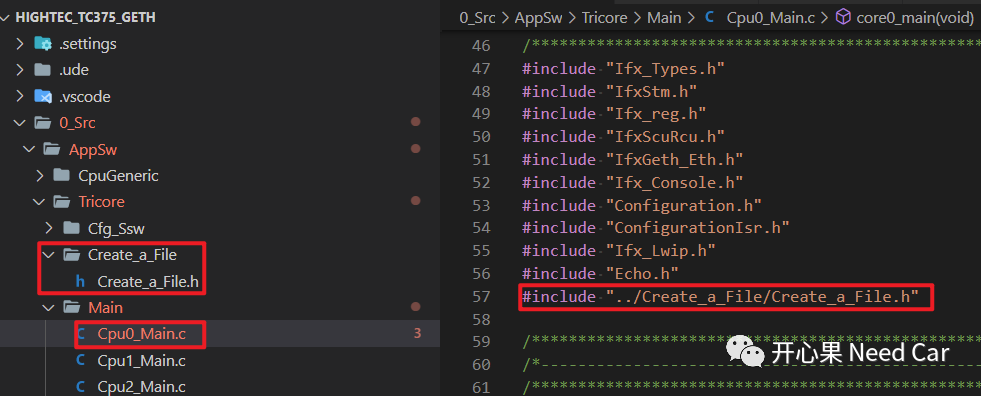
提示：需要包含具体的文件路径。
接口Func_Add_TwoNum()具体在Cpu0_Main.c中调用如下所示：
{result = Func_Add_TwoNum(0x10, 0x20);}
（三）运行结果
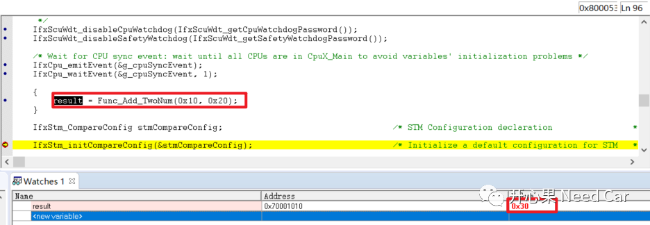
综上，完整地展示了HighTec如何将源文件（*.c）封装成静态库文件（*.a），以及第三方如何集成和使用库文件。
往期精彩回顾